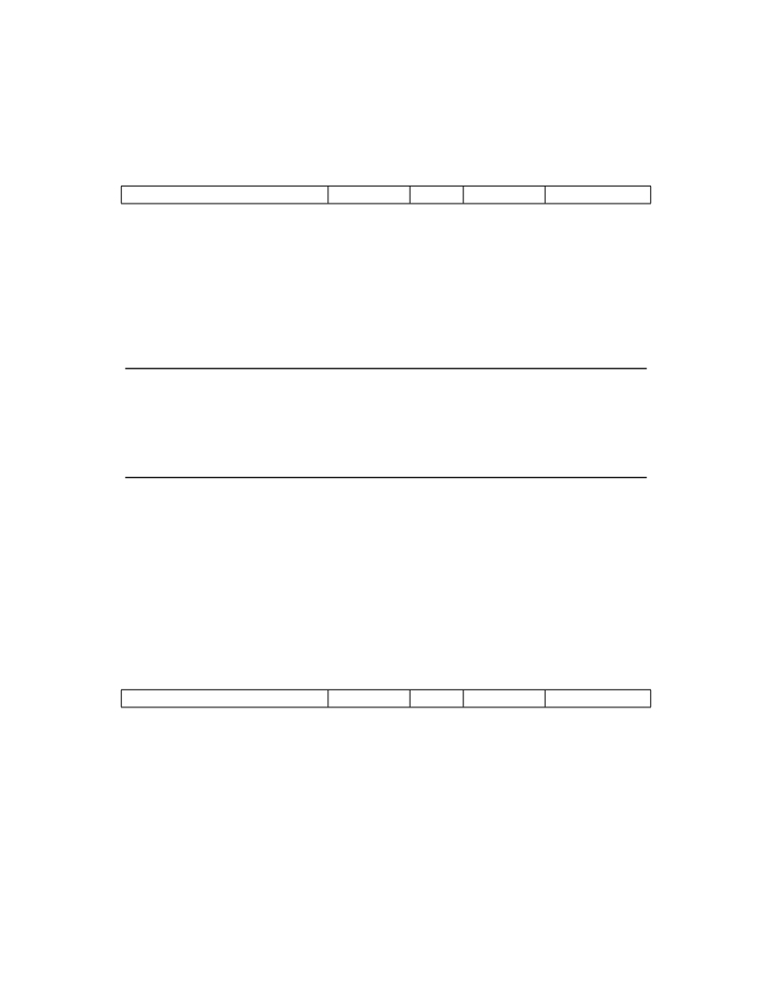

<table border="0" height="1453" width="1123">
<tr><td>
<div style="position:absolute; top:0; left:0;"></div>
<div style="position:absolute;top:74.119;left:132.145;"><nobr>
<span style="font-size:20.022;">40</span>
</nobr></div>
<div style="position:absolute;top:126.195;left:132.145;"><nobr>
<span style="font-size:26.330;font-weight:bold;">3.2</span>
</nobr></div>
<div style="position:absolute;top:193.536;left:132.145;"><nobr>
<span style="font-size:21.942;font-weight:bold;">3.2.1</span>
</nobr></div>
<div style="position:absolute;top:74.119;left:331.141;"><nobr>
<span style="font-size:20.022;font-style:italic;">Volume II: RISC-V Privileged Architectures V20190608-Priv-MSU-Ratified</span>
</nobr></div>
<div style="position:absolute;top:126.195;left:199.577;"><nobr>
<span style="font-size:26.330;font-weight:bold;">Machine-Mode Privileged Instructions</span>
</nobr></div>
<div style="position:absolute;top:193.536;left:207.516;"><nobr>
<span style="font-size:21.942;font-weight:bold;">Environment Call and Breakpoint</span>
</nobr></div>
<div style="position:absolute;top:252.355;left:193.776;"><nobr>
<span style="font-size:14.628;">31</span>
</nobr></div>
<div style="position:absolute;top:252.355;left:462.272;"><nobr>
<span style="font-size:14.628;">20 19</span>
</nobr></div>
<div style="position:absolute;top:252.355;left:581.182;"><nobr>
<span style="font-size:14.628;">15 14</span>
</nobr></div>
<div style="position:absolute;top:252.355;left:652.523;"><nobr>
<span style="font-size:14.628;">12 11</span>
</nobr></div>
<div style="position:absolute;top:252.355;left:785.578;"><nobr>
<span style="font-size:14.628;">7 6</span>
</nobr></div>
<div style="position:absolute;top:252.355;left:928.288;"><nobr>
<span style="font-size:14.628;">0</span>
</nobr></div>
<div style="position:absolute;top:274.209;left:294.440;"><nobr>
<span style="font-size:20.022;">funct12</span>
</nobr></div>
<div style="position:absolute;top:299.808;left:322.451;"><nobr>
<span style="font-size:20.022;">12</span>
</nobr></div>
<div style="position:absolute;top:324.675;left:298.397;"><nobr>
<span style="font-size:20.022;">ECALL</span>
</nobr></div>
<div style="position:absolute;top:349.544;left:289.081;"><nobr>
<span style="font-size:20.022;">EBREAK</span>
</nobr></div>
<div style="position:absolute;top:274.209;left:524.046;"><nobr>
<span style="font-size:20.022;">rs1</span>
</nobr></div>
<div style="position:absolute;top:299.808;left:532.282;"><nobr>
<span style="font-size:20.022;">5</span>
</nobr></div>
<div style="position:absolute;top:324.675;left:532.274;"><nobr>
<span style="font-size:20.022;">0</span>
</nobr></div>
<div style="position:absolute;top:349.544;left:532.228;"><nobr>
<span style="font-size:20.022;">0</span>
</nobr></div>
<div style="position:absolute;top:274.209;left:607.723;"><nobr>
<span style="font-size:20.022;">funct3</span>
</nobr></div>
<div style="position:absolute;top:299.808;left:627.426;"><nobr>
<span style="font-size:20.022;">3</span>
</nobr></div>
<div style="position:absolute;top:324.675;left:607.116;"><nobr>
<span style="font-size:20.022;">PRIV</span>
</nobr></div>
<div style="position:absolute;top:349.544;left:607.070;"><nobr>
<span style="font-size:20.022;">PRIV</span>
</nobr></div>
<div style="position:absolute;top:274.209;left:724.103;"><nobr>
<span style="font-size:20.022;">rd</span>
</nobr></div>
<div style="position:absolute;top:299.808;left:728.938;"><nobr>
<span style="font-size:20.022;">5</span>
</nobr></div>
<div style="position:absolute;top:324.675;left:728.910;"><nobr>
<span style="font-size:20.022;">0</span>
</nobr></div>
<div style="position:absolute;top:349.544;left:728.884;"><nobr>
<span style="font-size:20.022;">0</span>
</nobr></div>
<div style="position:absolute;top:274.209;left:839.304;"><nobr>
<span style="font-size:20.022;">opcode</span>
</nobr></div>
<div style="position:absolute;top:299.808;left:859.762;"><nobr>
<span style="font-size:20.022;">7</span>
</nobr></div>
<div style="position:absolute;top:324.675;left:822.894;"><nobr>
<span style="font-size:20.022;">SYSTEM</span>
</nobr></div>
<div style="position:absolute;top:349.544;left:822.867;"><nobr>
<span style="font-size:20.022;">SYSTEM</span>
</nobr></div>
<div style="position:absolute;top:415.448;left:132.145;"><nobr>
<span style="font-size:20.022;">The ECALL instruction is used to make a request to the supporting execution environment.</span>
</nobr></div>
<div style="position:absolute;top:440.315;left:132.145;"><nobr>
<span style="font-size:20.022;">When executed in U-mode, S-mode, or M-mode, it generates an environment-call-from-U-mode</span>
</nobr></div>
<div style="position:absolute;top:465.182;left:132.145;"><nobr>
<span style="font-size:20.022;">exception, environment-call-from-S-mode exception, or environment-call-from-M-mode exception,</span>
</nobr></div>
<div style="position:absolute;top:490.050;left:132.145;"><nobr>
<span style="font-size:20.022;">respectively, and performs no other operation.</span>
</nobr></div>
<div style="position:absolute;top:545.936;left:182.201;"><nobr>
<span style="font-size:18.285;font-style:italic;">ECALL generates a different exception for each originating privilege mode so that environment</span>
</nobr></div>
<div style="position:absolute;top:567.877;left:182.201;"><nobr>
<span style="font-size:18.285;font-style:italic;">call exceptions can be selectively delegated. A typical use case for Unix-like operating systems is</span>
</nobr></div>
<div style="position:absolute;top:589.821;left:182.201;"><nobr>
<span style="font-size:18.285;font-style:italic;">to delegate to S-mode the environment-call-from-U-mode exception but not the others.</span>
</nobr></div>
<div style="position:absolute;top:623.658;left:132.145;"><nobr>
<span style="font-size:20.022;">The EBREAK instruction is used by debuggers to cause control to be transferred back to a debug-</span>
</nobr></div>
<div style="position:absolute;top:648.525;left:132.145;"><nobr>
<span style="font-size:20.022;">ging environment. It generates a breakpoint exception and performs no other operation.</span>
</nobr></div>
<div style="position:absolute;top:704.411;left:182.201;"><nobr>
<span style="font-size:18.285;font-style:italic;">As described in the “C” Standard Extension for Compressed Instructions in Volume I of this</span>
</nobr></div>
<div style="position:absolute;top:726.354;left:182.201;"><nobr>
<span style="font-size:18.285;font-style:italic;">manual, the C.EBREAK instruction performs the same operation as the EBREAK instruction.</span>
</nobr></div>
<div style="position:absolute;top:760.191;left:132.145;"><nobr>
<span style="font-size:20.022;">ECALL and EBREAK cause the receiving privilege mode’s epc register to be set to the address of</span>
</nobr></div>
<div style="position:absolute;top:785.058;left:132.145;"><nobr>
<span style="font-size:20.022;">the ECALL or EBREAK instruction itself,</span>
<span style="font-size:20.022;font-style:italic;">not</span>
<span style="font-size:20.022;">the address of the following instruction.</span>
</nobr></div>
<div style="position:absolute;top:858.555;left:132.145;"><nobr>
<span style="font-size:21.942;font-weight:bold;">3.2.2</span>
</nobr></div>
<div style="position:absolute;top:858.555;left:207.516;"><nobr>
<span style="font-size:21.942;font-weight:bold;">Trap-Return Instructions</span>
</nobr></div>
<div style="position:absolute;top:916.556;left:132.145;"><nobr>
<span style="font-size:20.022;">Instructions to return from trap are encoded under the PRIV minor opcode.</span>
</nobr></div>
<div style="position:absolute;top:984.579;left:193.776;"><nobr>
<span style="font-size:14.628;">31</span>
</nobr></div>
<div style="position:absolute;top:984.579;left:462.272;"><nobr>
<span style="font-size:14.628;">20 19</span>
</nobr></div>
<div style="position:absolute;top:984.579;left:581.182;"><nobr>
<span style="font-size:14.628;">15 14</span>
</nobr></div>
<div style="position:absolute;top:984.579;left:652.523;"><nobr>
<span style="font-size:14.628;">12 11</span>
</nobr></div>
<div style="position:absolute;top:984.579;left:785.578;"><nobr>
<span style="font-size:14.628;">7 6</span>
</nobr></div>
<div style="position:absolute;top:984.579;left:928.288;"><nobr>
<span style="font-size:14.628;">0</span>
</nobr></div>
<div style="position:absolute;top:1006.435;left:294.440;"><nobr>
<span style="font-size:20.022;">funct12</span>
</nobr></div>
<div style="position:absolute;top:1032.032;left:322.451;"><nobr>
<span style="font-size:20.022;">12</span>
</nobr></div>
<div style="position:absolute;top:1056.901;left:235.967;"><nobr>
<span style="font-size:20.022;">MRET/SRET/URET</span>
</nobr></div>
<div style="position:absolute;top:1006.435;left:524.046;"><nobr>
<span style="font-size:20.022;">rs1</span>
</nobr></div>
<div style="position:absolute;top:1032.032;left:532.282;"><nobr>
<span style="font-size:20.022;">5</span>
</nobr></div>
<div style="position:absolute;top:1056.901;left:532.193;"><nobr>
<span style="font-size:20.022;">0</span>
</nobr></div>
<div style="position:absolute;top:1006.435;left:607.723;"><nobr>
<span style="font-size:20.022;">funct3</span>
</nobr></div>
<div style="position:absolute;top:1032.032;left:627.426;"><nobr>
<span style="font-size:20.022;">3</span>
</nobr></div>
<div style="position:absolute;top:1056.901;left:607.035;"><nobr>
<span style="font-size:20.022;">PRIV</span>
</nobr></div>
<div style="position:absolute;top:1006.435;left:724.103;"><nobr>
<span style="font-size:20.022;">rd</span>
</nobr></div>
<div style="position:absolute;top:1032.032;left:728.938;"><nobr>
<span style="font-size:20.022;">5</span>
</nobr></div>
<div style="position:absolute;top:1056.901;left:728.849;"><nobr>
<span style="font-size:20.022;">0</span>
</nobr></div>
<div style="position:absolute;top:1006.435;left:839.304;"><nobr>
<span style="font-size:20.022;">opcode</span>
</nobr></div>
<div style="position:absolute;top:1032.032;left:859.762;"><nobr>
<span style="font-size:20.022;">7</span>
</nobr></div>
<div style="position:absolute;top:1056.901;left:822.833;"><nobr>
<span style="font-size:20.022;">SYSTEM</span>
</nobr></div>
<div style="position:absolute;top:1122.805;left:132.145;"><nobr>
<span style="font-size:20.022;">To return after handling a trap, there are separate trap return instructions per privilege level:</span>
</nobr></div>
<div style="position:absolute;top:1147.672;left:132.145;"><nobr>
<span style="font-size:20.022;">MRET, SRET, and URET. MRET is always provided. SRET must be provided if supervisor mode</span>
</nobr></div>
<div style="position:absolute;top:1172.539;left:132.145;"><nobr>
<span style="font-size:20.022;">is supported, and should raise an illegal instruction exception otherwise. SRET should also raise an</span>
</nobr></div>
<div style="position:absolute;top:1197.406;left:132.145;"><nobr>
<span style="font-size:20.022;">illegal instruction exception when TSR=1 in mstatus , as described in Section</span>
<span style="font-size:20.022;color: #000080;"><a href="#" onClick="javascript:parent.GotoNewPage(34); return false">3.1.6.4</a></span>
<span style="font-size:20.022;">. URET is only</span>
</nobr></div>
<div style="position:absolute;top:1222.274;left:132.145;"><nobr>
<span style="font-size:20.022;">provided if user-mode traps are supported, and should raise an illegal instruction otherwise. An</span>
</nobr></div>
<div style="position:absolute;top:1247.143;left:132.145;"><nobr>
<span style="font-size:20.022;font-style:italic;">x</span>
<span style="font-size:20.022;">RET instruction can be executed in privilege mode</span>
<span style="font-size:20.022;font-style:italic;">x</span>
<span style="font-size:20.022;">or higher, where executing a lower-privilege</span>
</nobr></div>
<div style="position:absolute;top:1272.010;left:132.145;"><nobr>
<span style="font-size:20.022;font-style:italic;">x</span>
<span style="font-size:20.022;">RET instruction will pop the relevant lower-privilege interrupt enable and privilege mode stack.</span>
</nobr></div>
<div style="position:absolute;top:1296.877;left:132.145;"><nobr>
<span style="font-size:20.022;">In addition to manipulating the privilege stack as described in Section</span>
<span style="font-size:20.022;color: #000080;"><a href="#" onClick="javascript:parent.GotoNewPage(31); return false">3.1.6.1</a></span>
<span style="font-size:20.022;">,</span>
<span style="font-size:20.022;font-style:italic;">x</span>
<span style="font-size:20.022;">RET sets the pc</span>
</nobr></div>
<div style="position:absolute;top:1321.744;left:132.145;"><nobr>
<span style="font-size:20.022;">to the value stored in the</span>
<span style="font-size:20.022;font-style:italic;">x</span>
<span style="font-size:20.022;">epc register.</span>
</nobr></div>
</td></tr>
</table>
